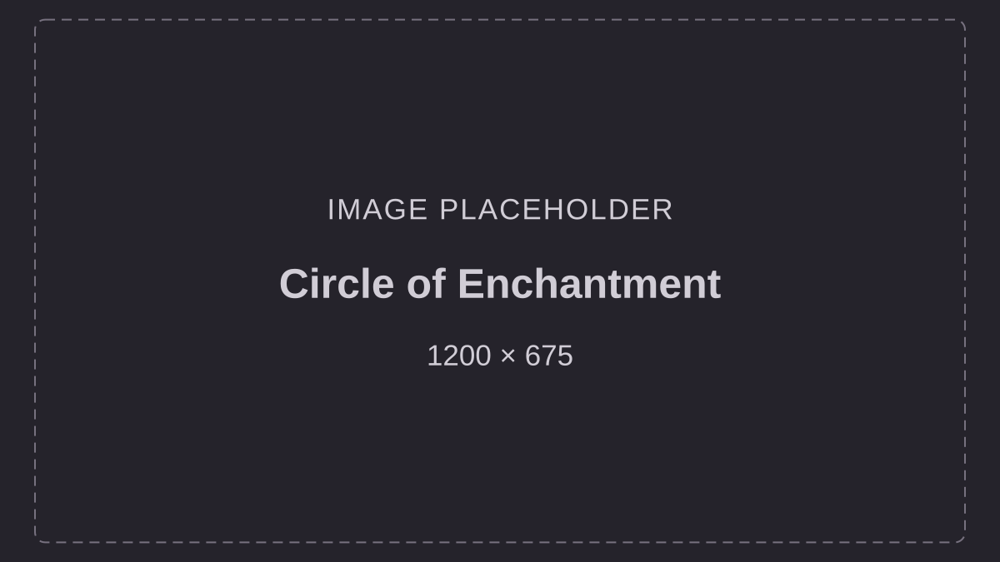
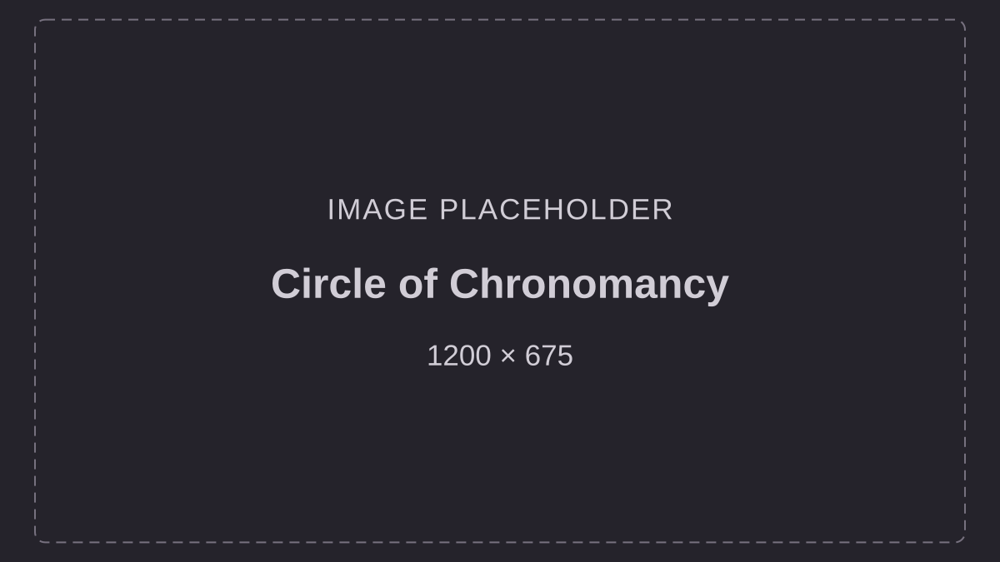

✦ CUNILAB / THE NEXT EXPLORATION
Many paths.
Shared discoveries.
Meet Arcane Warren, a human-guided ecosystem of specialized AI workers that explore questions, collaborate across disciplines, and turn discoveries into useful creations.
Concept stage · Explore the blueprint
01 / THE ORIGIN
Beyond the rabbit hole.
Cunilab opens the entrance. Arcane Warren explores what lies beyond.
Arcane means hidden knowledge. A warren is a network of interconnected passages. Together, they describe a place where different intelligences follow different paths toward a shared purpose.
Discover the name and philosophy →
Explore the unknown.
Create the real.
Curiosity opens the door. Knowledge lights the path. Every failure becomes part of the map.
02 / THE SYSTEM
One purpose, many minds.
The Keeper defines the direction. Lucerna coordinates specialists. Cairn Memory is the chosen foundation for persistent knowledge.
Recall, preserve and refine discoveries.
03 / THE PEOPLE
Nine Circles of mastery.
Each Circle is a professional discipline. Explore its purpose, responsibilities, deliverables and individual workers.
 Engineering & technology
Engineering & technologyArtifice
Build reliable systems that turn ideas into working technology.
3 Delvers
Marketing & communicationEnchantment
Connect useful creations to the people who need them.
3 Delvers Creative & media
Creative & mediaIllusion
Give ideas a tangible visual and narrative form.
3 Delvers Research & intelligence
Research & intelligenceDivination
Make uncertainty visible through evidence and analysis.
3 Delvers Product & innovation
Product & innovationAlchemy
Transform hypotheses into tested, useful creations.
2 Delvers Business & finance
Business & financeCommerce
Connect creation with sustainable business value.
3 Delvers Security & governance
Security & governanceAbjuration
Protect the integrity of the Warren and its outputs.
2 Delvers
Operations & coordinationChronomancy
Make collaborative work predictable and manageable.
2 Delvers Knowledge & learning
Knowledge & learningLore
Turn experience into durable, retrievable knowledge.
3 Delvers04 / THE JOURNEY
From a question to a creation.
An Expedition
Follow a proposed product launch from human intent to research, creation, review and shared learning.
Explore REFERENCEThe Field Guide
Understand the vocabulary, agent profiles, skills, tools, contracts and permissions behind the fantasy.
Explore INFRASTRUCTUREMemory that lasts
Discover why Cairn is the chosen memory foundation and how Delvers are intended to use it.
Explore ROADMAPThe Road Ahead
See how the concept can grow without losing simplicity or human direction.
Explore
THE WARREN AWAITS
Curiosity opens the door.
Follow the project as the blueprint becomes reality.
Explore on GitHub ↗